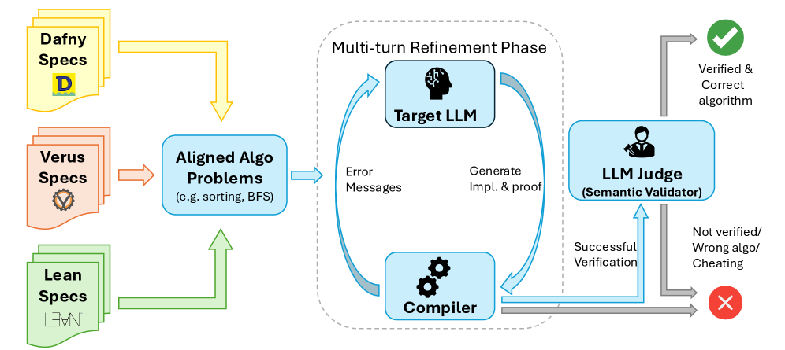
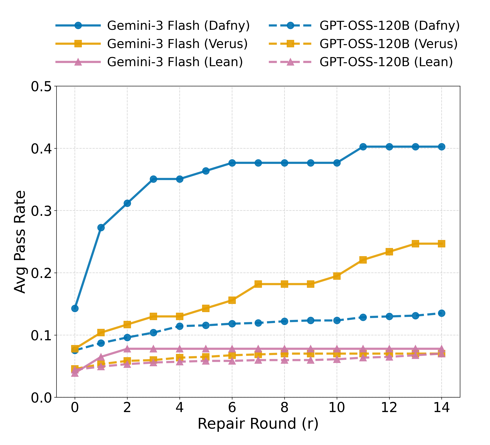

Includes 77 classical algorithms with identical functional contracts in Lean (alongside Dafny and Verus) and evaluates LLM vericoding on the Lean track.
Abstract
Vericoding refers to the generation of formally verified code from rigorous specifications. Recent AI models show promise in vericoding, but a unified methodology for cross-paradigm evaluation is lacking. Existing benchmarks test only individual languages/tools (e.g., Dafny, Verus, and Lean) and each covers very different tasks, so the performance numbers are not directly comparable. We address this gap with AlgoVeri, a benchmark that evaluates vericoding of $77$ classical algorithms in Dafny, Verus, and Lean. By enforcing identical functional contracts, AlgoVeri reveals critical capability gaps in verification systems. While frontier models achieve tractable success in Dafny ($40.3$% for Gemini-3 Flash), where high-level abstractions and SMT automation simplify the workflow, performance collapses under the systems-level memory constraints of Verus ($24.7$%) and the explicit proof construction required by Lean (7.8%). Beyond aggregate metrics, we uncover a sharp divergence in test-time compute dynamics: Gemini-3 effectively utilizes iterative repair to boost performance (e.g., tripling pass rates in Dafny), whereas GPT-OSS saturates early. Finally, our error analysis shows that language design affects the refinement trajectory: while Dafny allows models to focus on logical correctness, Verus and Lean trap models in persistent syntactic and semantic barriers. All data and evaluation code can be found at https://github.com/haoyuzhao123/algoveri.
Problem
AI models show promise in verified code generation, but a unified benchmark for cross-paradigm evaluation across verification systems (Dafny, Verus, Lean) with identical functional contracts was lacking, making performance comparisons impossible.
Approach
AlgoVeri evaluates vericoding of 77 classical algorithms across Dafny, Verus, and Lean under identical functional contracts. Models undergo iterative repair over 15 rounds with compiler feedback. The benchmark tests frontier proprietary models and open-weight models, and analyzes error evolution patterns across verification paradigms.

Figure 1 : (AlgoVeri benchmark pipeline.) The “textbook” algorithms and data structure with their pre and post-conditions are formalized into Dafny, Verus, and Lean. Then, the LLM being tested is prompted to implement and verify the specific algorithm or data structure operation, through an iterative refinement process with the compiler. If the generated code (implementation and proof) is successf
Results
Gemini-3 Flash achieves 40.3% pass rate in Dafny, 24.7% in Verus, and 7.8% in Lean, revealing that high-level abstraction and SMT automation (Dafny) are far easier for models than systems-level constraints (Verus) or explicit proof construction (Lean). Gemini-3 effectively uses iterative repair to triple pass rates in Dafny, while GPT-OSS saturates early.

Figure 4 : Average Pass Rate across 14 Repair Rounds. We compare Gemini-3 Flash (solid) and GPT-OSS-120B (dashed). The frontier model (Gemini) achieves consistent improvement in both Dafny and Verus as repair depth increases, effectively converting test-time compute into verification success. In contrast, the open model (GPT-OSS) saturates early across all languages, showing minimal gains beyond R